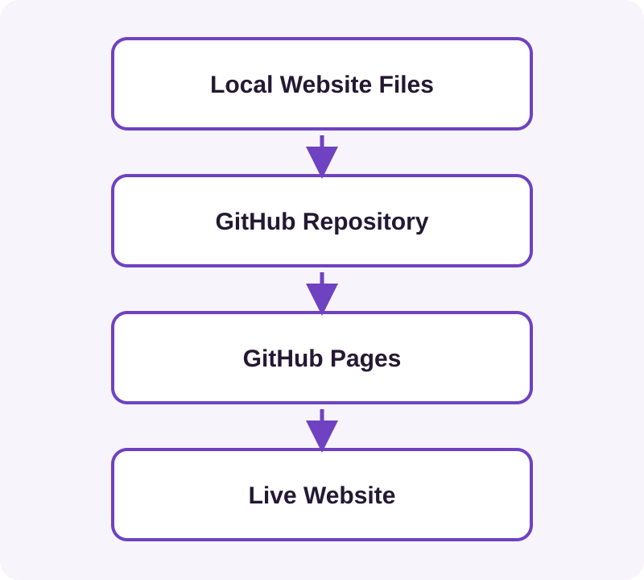

Learning Outcome
You finished Tutorial 2 with a responsive page on your computer. By the end of this tutorial you will have a GitHub account and repository, stored website files, GitHub Pages enabled, a public URL, and a working understanding of repository, commit, branch, deployment and optional custom domains.
1Separate GitHub from GitHub Pages
GitHub stores and versions source files in a repository—the project folder and its change history. GitHub Pages publishes compatible static content from that repository as a website.

A deployment turns a selected repository version into the public site.
2Create an Account and Repository
- Use GitHub sign-up, verify your email and enable two-factor authentication.
- Create a repository using GitHub's repository controls.
- Choose a short name such as
photography-website; it becomes part of a project-site URL. - Choose visibility. GitHub Pages availability for private repositories depends on the current GitHub plan. A public repository is the simplest free learning option, but everyone can read it. Never include secrets or private originals.
- Optionally initialise a
README, a plain-text introduction to the project.
The repository's main line of work is normally a branch called main. Later, separate branches will hold proposed changes safely.
3Add the Tutorial 2 Website
Use GitHub's file upload control or drag files into its upload area. Add index.html, the images/ folder, and every local CSS, script or asset the page uses.
index.html
images/
photo1.jpg
photo2.jpg
photo3.jpgKeep index.html at the publishing root. Relative paths such as images/photo1.jpg travel with the page; a leading slash can incorrectly point outside a project site's repository path.
4Record a Commit
Enter a focused message such as Add initial photography website and commit the upload.
It groups changes with a message and a place in history. You do not need a full Git course to use this safety net.
5Enable GitHub Pages
- Open repository settings and find Pages.
- In the build-and-deployment area, choose deployment from a branch.
- Select
mainand the root (/) folder, then save. - Wait for deployment and find the published URL in Pages settings or deployment information.
A project URL commonly follows https://USERNAME.github.io/REPOSITORY/. Labels can evolve; the durable choice is the branch and folder containing index.html. Consult GitHub's publishing-source guide if the interface differs.
6Verify the First Deployment
- Visit the URL and confirm the page loads.
- Check all photographs and Bootstrap styling.
- Test the menu and layout in a narrow window or on a phone.
A local success does not prove deployed paths or filename case are correct.
Troubleshooting
- 404: the publishing root may lack
index.html. - Missing image: compare path, extension and case exactly.
- Unstyled: inspect the Bootstrap URL and network connection.
- Old version: confirm the commit is on the publishing branch and allow several minutes.
7Understand Optional Custom Domains
First own or purchase a domain. Enter it in the GitHub Pages custom-domain setting, then create the DNS records GitHub documents for that domain type. DNS directs the domain to GitHub Pages. After it resolves, enable HTTPS when available so traffic is encrypted.
Use GitHub's current custom-domain guide, rather than registrar-specific guesses.
8Recognise a Delivery Pipeline
repository change → commit → deployment → websiteThis is already a simple delivery pipeline: a repeatable route from source change to live result.